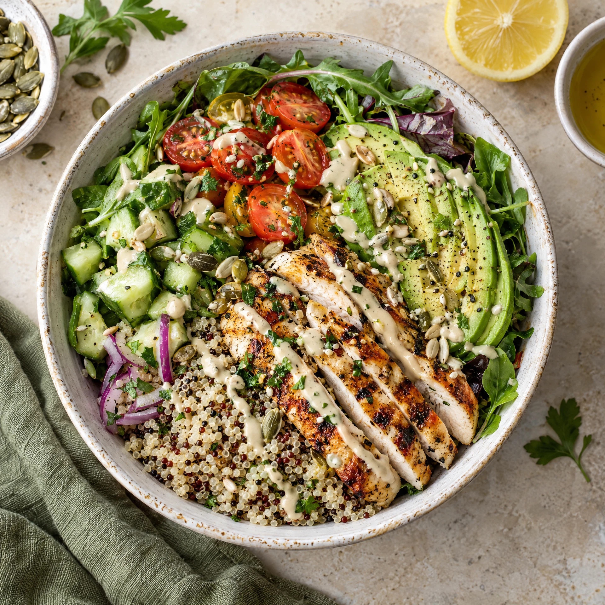
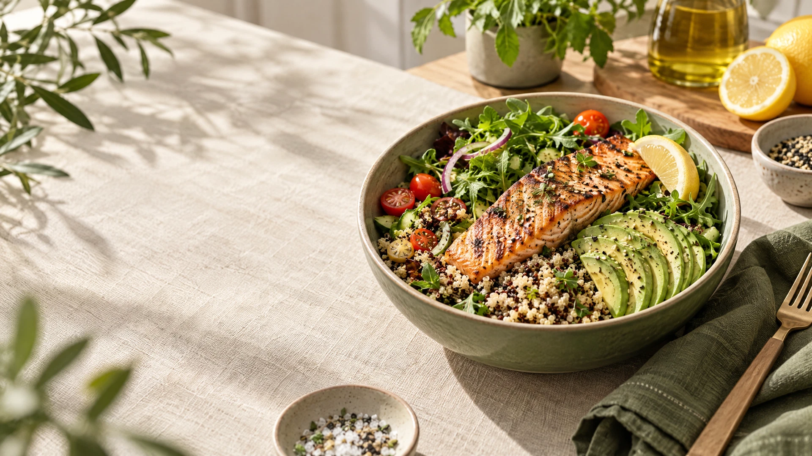
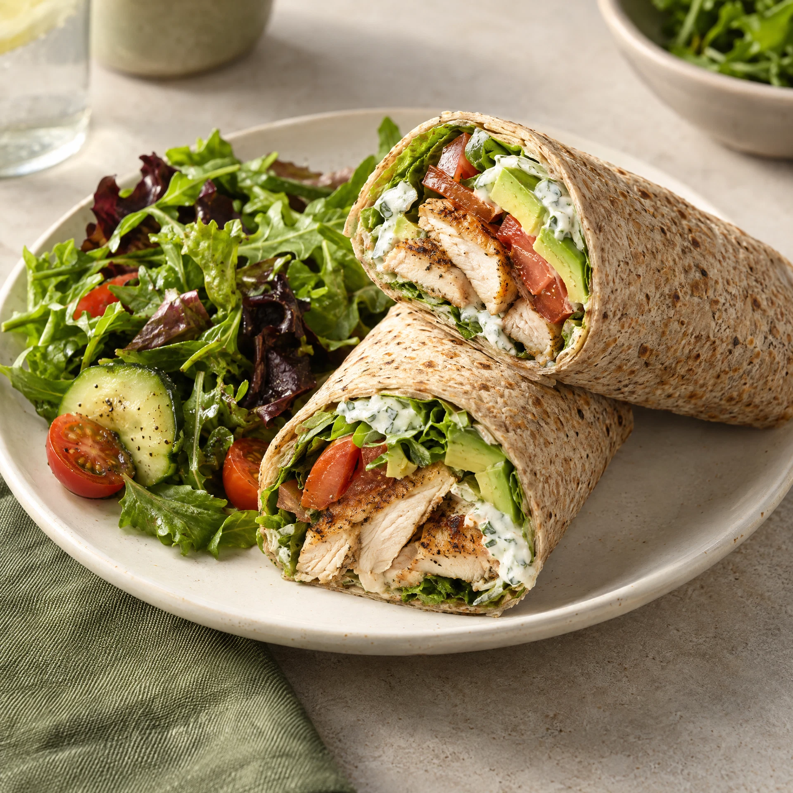
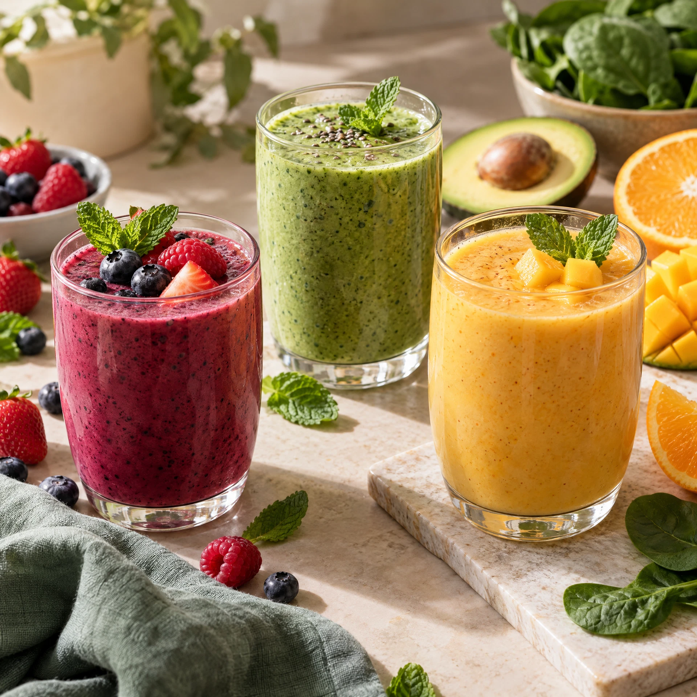

غذاء أذكى، يوم أجمل
لذيذ من أول لقمة، ومتوازن حتى آخرها.
وجبات طازجة بمكونات واضحة وطعم يفرّحك. اختاري ما يناسب يومك — ونحن نتولى الباقي.
✳ مكونات يومية طازجة✳ خيارات تناسبك✳ توصيل سهل

اختيارك اليوميصحي ولذيذ
من قائمتنا
شيء طيب ليومك
وجبات محضرة بعناية لتناسب استراحة سريعة أو يومًا مليئًا بالحركة.


اختاري بوعي. استمتعي براحة.
اطلعي على القيم الغذائية، قارني خياراتك، وابدئي طلبك بخطوات بسيطة.
مكونات معروفة
نوضح لكِ المكونات والقيم الغذائية لكل صنف.
توازن بلا تعقيد
خيارات متنوعة من الأطباق والراب والمشروبات.
طلب على مزاجك
اختاري الكمية والوقت والوجبة المفضلة لكِ.